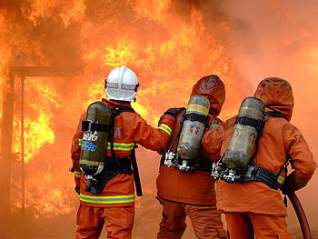

Povijest DVD-a
Kako je tradicija vatrogasnog djelovanja na ovom području izrazito jaka i seže u 19. stoljeće, gdje je ubrzano iskazana želja za osnivanjem mjesnog dobrovoljnog vatrogasnog društva. Nužnost za brzim i nadasve efikasnim sprečavanjem haranja vatrene stihije još je bila izraženija u to vrijeme početaka razvoja organiziranog vatrogasnog pokreta, posebice zbog poraznih iskustava u borbi s vatrom koja je nemilice gutala slamnate krovove seljačkih domaćinstava te često ostavljala velike obitelji bez osnovnih egzistencijalnih uvjeta. Začetnik vatrogasnog pokreta u našem kraju bio je Konrad Klingspoegel, ondašnji učitelj u mjesnoj pučkoj školi. Okupivši istomišljenike među mještanima svih sela tadašnje Župe Ravna Gora, počela su se osnivati dobrovoljna vatrogasna društva u okolnim selima. Uz podršku pojedinih mještana Ravne Gore, učitelj Klingspoegel osnovao je prema neslužbenim izvorima Dobrovoljno vatrogasno društvo Ravna Gora 1888. Bilo je prvo utemeljeno drustvo na podrucju Ravne Gore te je stvorilo preduvjete za razvijanje sustava civilne zaštite koja je kasnije uklopljena u Vatrogasnu zajednicu opcine (VZO). Temeljne zadace drustva su zastita od pozara i raznih elementarnih nepogoda. Uz to vrse se osposobljavanje stanovništva i clanova za daljnu provedbu zaštite te sudjelovanje na raznim događanjima vezanim uz promoviranje vatrogastva. Drustvo sudjeluje na natjecanjima u gotovo svim kategorijama te postize kvalitetne rezultate. Trenutno drustvo broji oko 50 članova od kojih je 20 operativnih clanova s potrebnom obukom i opremom.